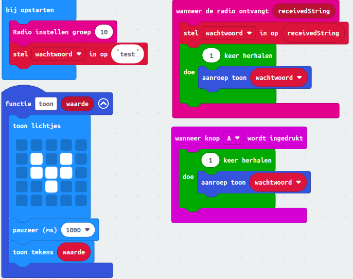

3 Radio communicatie tussen Micro:bits
De Micro:bit kan goed informatie uitwisselen met andere Micro:bits. We gaan een spel maken dat Vossenjacht heet. Eén persoon is de Vos en alle andere kinderen gaan de Vos zoeken. De Vos heeft een rode sjaal en een Micro:bit om zijn nek. Op het scherm van de Micro:bit van de Vos zie je om de 5 seconden een plaatje van een Vos. De Vos heeft zich verstopt en alle andere kinderen hebben ook een Micro:bit. Als ze dicht genoeg bij de Vos komen, dan geeft de Micro:bit van de Vos een teken dat je in de buurt bent.
Inhoud
Inleiding
Hey, ik ga je vertellen over een tof spel dat je kunt maken met je micro:bit. Het heet "Vossenjacht"! Eén van jullie zal de "vos" zijn en hij draagt een micro:bit om zijn nek. Je kunt de "vos" herkennen aan een bericht dat zijn of haar micro:bit uitzendt.
Het bericht wordt verstuurt via "radio communicatie" en je hebt er geen wifi voor nodig om het te gebruiken. De blokken om het te gebruiken staan in de categorie "Radio".
De rest van jullie zijn de "jagers" en jullie hebben ook een micro:bit die op hetzelfde kanaal als de "vos" staat ingesteld. De micro:bit van de "vos" stuurt een bericht over iets wat de "vos" kenmerkt en jullie moeten hem vinden!
In een open ruimte kun je de "vos" tot wel 70 meter ver weg vinden, maar als er muren of andere obstakels zijn, zal de afstand korter zijn. Als je dichtbij genoeg bent, krijg je een bericht op je micro:bit en moet je de "vos" vinden!
Het allerleukste is natuurlijk als je dit spel met al je vriendjes speelt. Nodig ze dus uit om mee te doen! Je kunt de blokken in de categorie "Radio" gebruiken om het spel te programmeren en te spelen.
Wat je nodig hebt
- BBC Micro:bit – Go:Bundle V2.
- Mico USB aan Standaard USB kabel (is onderdeel van de bovenvermelde kit).
- Laptop met een moderne browser (Chrome, Firefox, Safari) met een standaard USB aansluiting.
De Coderdojo club van LeusdeZet in Leusden heeft voldoende micro:bits om het spel mee te spelen.
Wat je gaat doen
Stap 1: de vos maken.
Stap 2: een jager maken.
Stap 3: het vossenspel testen.
De vos maken
Je bent inmiddels zo gevorderd dat je dit diagram makkelijk kunt begrijpen.

Een jager maken
Ook de jager is makkelijk te maken.
